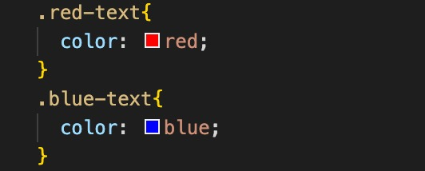
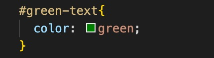

HTML/CSS Class and ID Selectors: which one to use?
22 April 2022
In this blog, we are going to look into some technical concepts in CSS: class selector and ID selector. We will discuss what are they and he best practices to use them.
First of all, what are CSS selectors?
HTML and CSS are like work partners. They all make their own contributions to the webpage we are browsing. We can talk about this for a whole day, but in short, HTML is all about the content on the webpage (HTML elements), while CSS is defining how HTML elements will be styled on the webpage(positions, colors, font style, etc). There might be thousands of HTML elements on one page, how CSS know which one to style? That's what CSS selectors do: CSS selectors select and control the elements we want to style with CSS. Among the many CSS selectors, Class and ID are two of the frequently used selectors.
OK, let's talk about them respectively!
CSS Class
The Class selector is used to select multiple HTML elements. To define a class selector, just simply use a period '.' before adding the class name.
CSS ID
The ID selector is unique. That means, ID selector can be used to define a single element on the webpage. To define an ID selector, we use a harsh '#' key, followed by the ID name.
ID has higher priority than class in CSS
Please note that when there are multiple rules applied to the same element, the CSS gives priority to the rule which is more specific. ID is more specific than class. In this case, ID will take precedence than Class.
Let's look at the example here:
We can see on the left both class and id are giving to the third p element. How these elements appear on browser is shown on the right.
Conclusion
To conclude, there is no rules to ask you to use one not the other, but in general, we try to use class to define HTML elements in the first place, as it can be applied to multiple elements. But when there is one particular HTML element you want it to have a specific style, use ID.